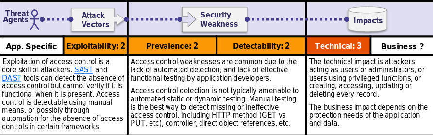

Is the Application Vulnerable?
Access control enforces policy such that users cannot act outside of their intended permissions. Failures typically lead to unauthorized information disclosure, modification or destruction of all data, or performing a business function outside of the limits of the user. Common access control vulnerabilities include:
•Bypassing access control checks by modifying the URL, internal application state, or the HTML page, or simply using a custom API attack tool.
•Allowing the primary key to be changed to another users record, permitting viewing or editing someone else's account.
•Elevation of privilege. Acting as a user without being logged in, or acting as an admin when logged in as a user.
•Metadata manipulation, such as replaying or tampering with a JSON Web Token (JWT)access control token or a cookie or hidden field manipulated to elevate privileges, or abusing JWT invalidation
•CORS misconfiguration allows unauthorized API access.
•Force browsing to authenticated pages as an unauthenticated user or to privileged pages as a standard user. Accessing API with missing access controls for POST, PUT and DELETE.
How to Prevent
Access control is only effective if enforced in trusted server-side code or server-less API, where the attacker cannot modify the access control check or metadata.
•With the exception of public resources, deny by default.
•Implement access control mechanisms once and re-use them throughout the application, including minimizing CORS usage.
•Model access controls should enforce record ownership, rather than accepting that the user can create, read, update, or delete any record.
•Unique application business limit requirements should be enforced by domain models.
•Disable web server directory listing and ensure file metadata (e.g. .git) and backup files are not present within web roots.
•Log access control failures, alert admins when appropriate (e.g. repeated failures).
•Rate limit API and controller access to minimize the harm from automated attack tooling.
•JWT tokens should be invalidated on the server after logout.Developers and QA staff should include functional access control unit and integration tests.
Example Attack Scenarios
Scenario #1: The application uses unverified data in a SQL call that is accessing account information:
pstmt.setString(1, request.getParameter("acct"));ResultSetresults = pstmt.executeQuery( );
An attacker simply modifies the 'acct' parameter in the browser to send whatever account number they want. If not properly verified, the attacker can access any user's account.
http://example.com/app/accountInfo?acct=notmyacct
Scenario #2: An attacker simply force browses to target URLs. Admin rights are required for access to the admin page.
http://example.com/app/getappInfo
http://example.com/app/admin_getappInfoIf
an unauthenticated user can access either page, it’s a flaw. If a non-admin can access the adminpage, this is a flaw.